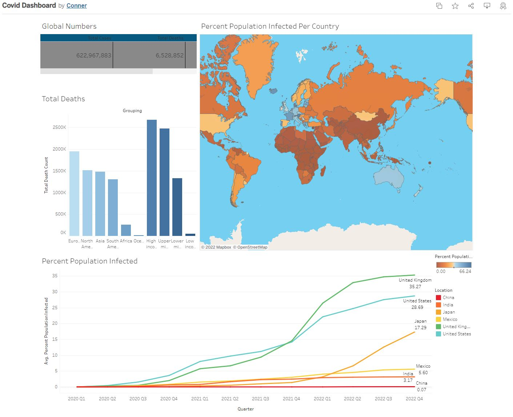
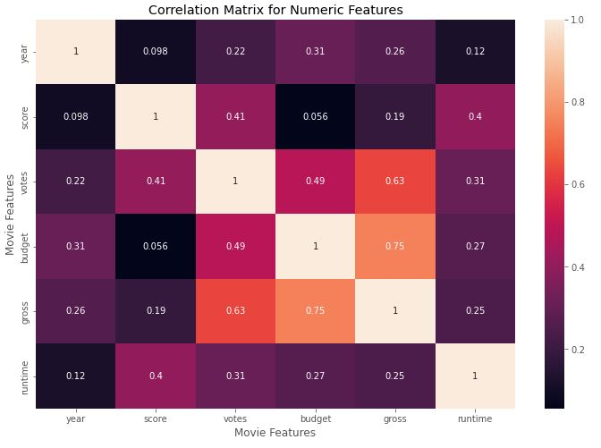
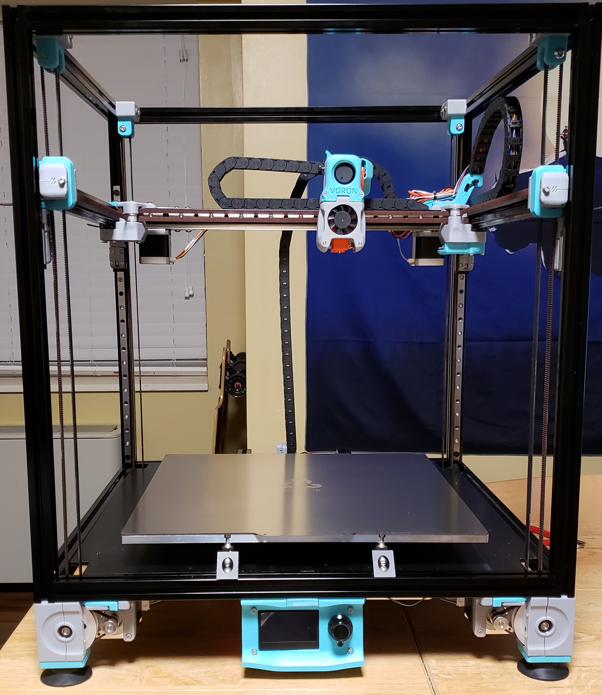

Hello, my name is Conner Webb and I am a new graduate with a computer science and cybersecurity degree.
Though my studies were in cybersecurity through my own studies I found a passion for Data Analyst and bringing data to life
with dashboards, and Jupyter Notebook. Taking data and going through the process of cleaning it, querrying it, and then displaying it
is a very satisfying process and has driven me to learn many new skills such as Python, MySQL, Excel, Tableau, and GBQ.
This is just the start for me and I am constatly striving to further my education.

The outbreak of Covid-19 was without a doubt one of the biggest events in my lifetime. Surrounding Covid-19 there was a lot
of confusion and contradicting information, this drove me to want to create my own dashboard so that I could see for myself the story
that the data tells. It was a very interesting project and the one that made me want to become a Data Analyst.

Movies are a huge part of modern culture and I wanted to know what factors influence their success. Using Jupyter notebook and Python I was able to
dive into the data and find the Correlations that influenced the outcome the most.

Though I have no direct connection to Nashville housing I wanted to not only test my skills and see where I could improve upon them.
Using SQL I went through and removed duplicates and fixed typos as well as standardized the data for easier use.

During this project I used a mono price mini 3d printer to manufacture parts to make my own custom Voron 2.4 3D Printer. With over 70 hours of work put into it it turned out to be one of my favorite projects.